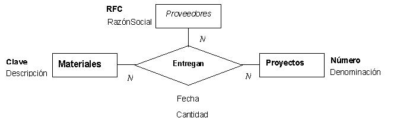

Laboratorio 15: Conociendo el ambiente de MariaDB
Modalidad
La que indique el profesor.
Objetivos de aprendizaje
- En esta práctica conoceremos el ambiente en el que utilizaremos un DBMS (Database Management System) con alcance empresarial.
Instrucciones
- Arquitectura.
-
Un DBMS empresarial en general ofrece servicio a muchos usuarios y maneja grandes volúmenes de información por
lo que típicamente reside en un servidor, es decir una computadora con suficientes recursos en términos de almacenamiento,
capacidad de procesamiento y un sistema operativo que sea eficiente para trabajar con múltiples procesos concurrentemente.
SQL es el lenguaje que se utiliza para:
label Consultas (Seleccionar determinadas secciones de una o varias tablas)
label Manipulación (insertar, modificar, eliminar registros o tuplas)
label Definición (Crear base de datos, tablas, etc. mediante la utilización de código)
label Programación (Crear procedimientos o rutinas que nos permitan automatizar algún proceso)
label_outlineCreación de las tablas de una base de datos en SQL
En esta practica crearemos las tablas que nos servirán para llevar a cabo las prácticas de laboratorio subsecuentes.
Se tiene el siguiente modelo entidad- relación:

IMPORTANTE: La fecha y la cantidad son atributos de la relación Entregan, adicionalmente la fecha debe formar parte de la llave de la tabla que represente a la relación Entregan ya que un proveedor puede hacer más de una entrega de un mismo material a un mismo proyecto, pero con fecha distinta. Esto es equivalente a tener una "entidad virtual" que es el tiempo, cuya llave es la fecha en la que ocurre la entrega. Dicho de otra forma, el atributo Fecha nos está sirviendo para asegurarnos que cada relación en la tabla Entregan será única.
A partir de dicho modelo, el esquema relacional que se deriva es el siguiente:
Materiales(Clave,Descripción,Costo)
Proveedores(RFC,RazonSocial)
Proyectos(Numero,Denominacion)
Entregan(Clave,RFC,Numero,Fecha,Cantidad)
Especificaciones de entrega
Presta atención a la sesión de clase en el uso de la herramienta, ya que se darán las instrucciones a detalle de la actividad.
Esta actividad es de carácter individual y se espera que al final de la misma, tengas la base de datos creada con las tablas creadas.